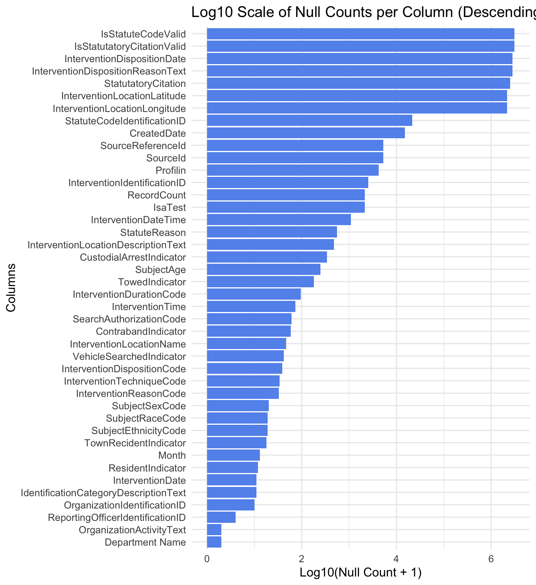
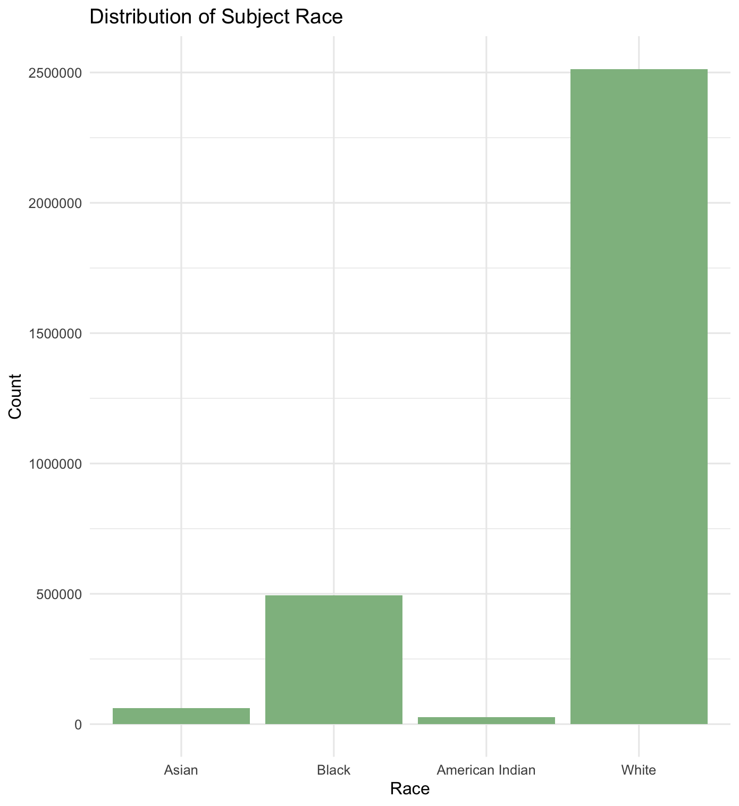
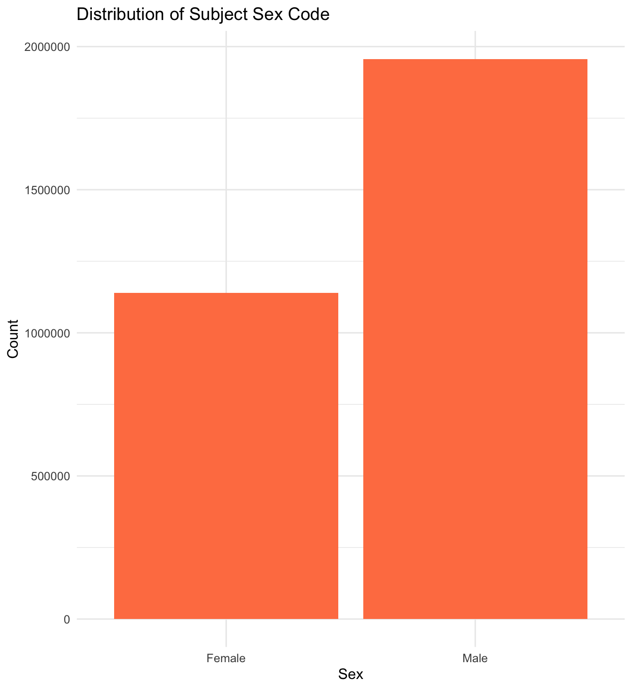
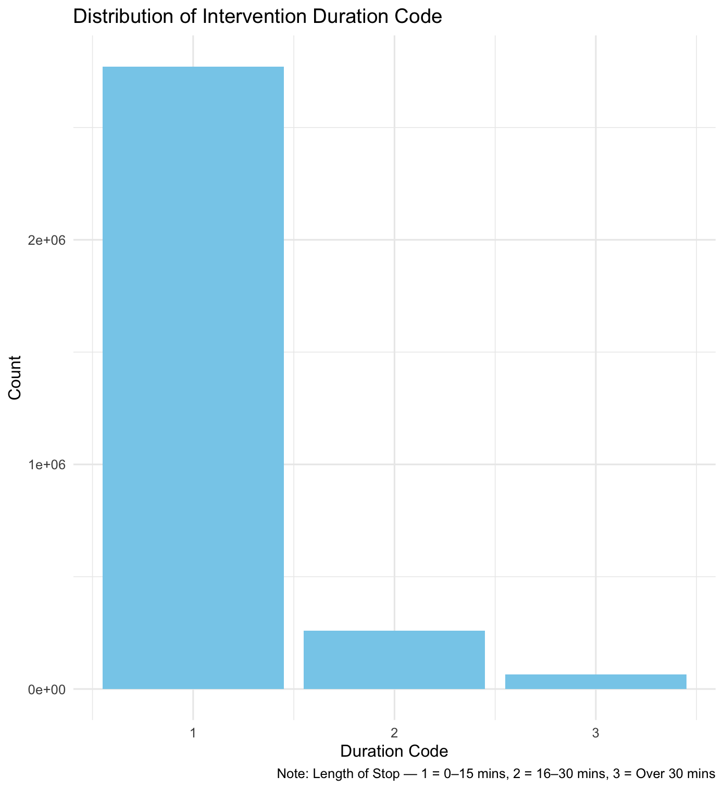
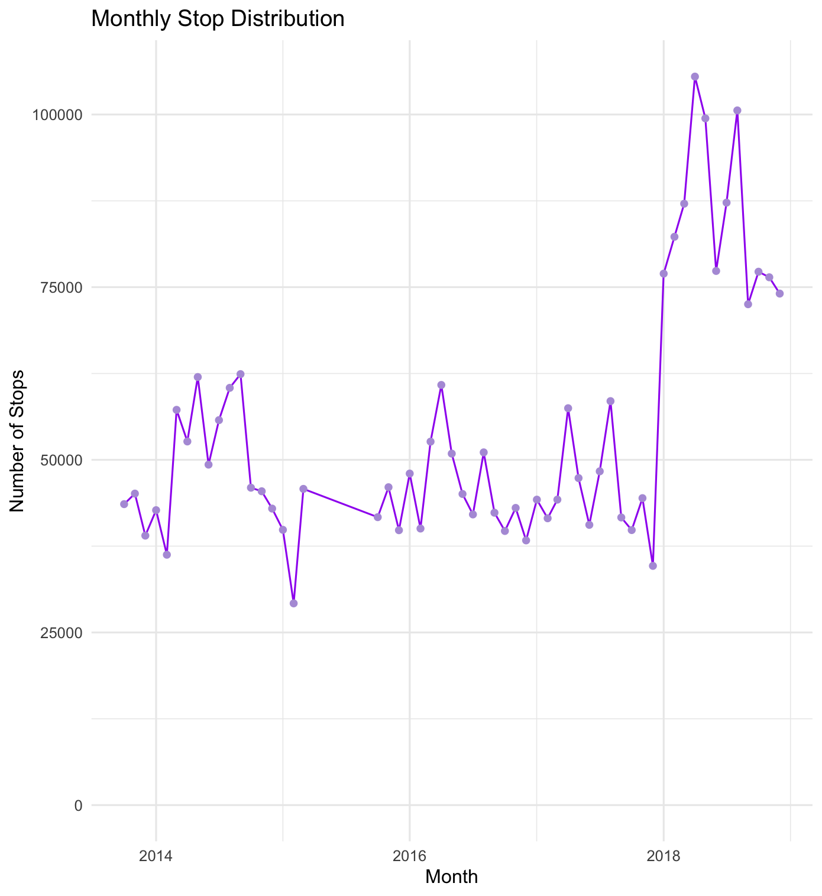
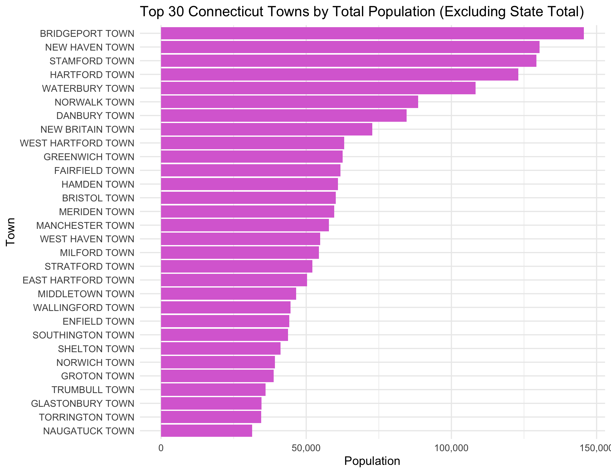

Data
This comes from the file data.qmd.
Your first steps in this project will be to find data to work on.
I recommend trying to find data that interests you and that you are knowledgeable about. A bad example would be if you have no interest in video games but your data set is about video games. I also recommend finding data that is related to current events, social justice, and other areas that have an impact.
Initially, you will study one dataset but later you will need to combine that data with another dataset. For this reason, I recommend finding data that has some date and/or location components. These types of data are conducive to interesting visualizations and analysis and you can also combine this data with other data that also has a date or location variable. Data from the census, weather data, economic data, are all relatively easy to combine with other data with time/location components.
What makes a good data set?
- Data you are interested in and care about.
- Data where there are a lot of potential questions that you can explore.
- A data set that isn’t completely cleaned already.
- Multiple sources for data that you can combine.
- Some type of time and/or location component.
Where to keep data?
Below 50mb: In dataset folder
Above 50mb: In dataset-ignore folder which you will have to create manually. This folder will be ignored by git so you’ll have to manually sync these files across your team.
Clean data script
The idea behind this file is that someone coming to your website could largely replicate your analyses after running this script on the original data sets to clean them. This file might create a derivative data set that you then use for your subsequent analysis. Note that you don’t need to run this script from every post/page. Instead, you can load in the results of this script, which will usually be .rds files. In your data page you’ll describe how these results were created. If you have a very large data set, you might save smaller data sets that you can use for exploration purposes. To link to this file, you can use [cleaning script](/scripts/clean_data.R) wich appears as cleaning script.
Rubric: On this page
You will
- Describe where/how to find data.
- You must include a link to the original data source(s). Make sure to provide attribution to those who collected the data.
- Why was the data collected/curated? Who put it together? (This is important, if you don’t know why it was collected then that might not be a good dataset to look at.
- Describe the different data files used and what each variable means.
- If you have many variables then only describe the most relevant ones, possibly grouping together variables that are similar, and summarize the rest.
- Use figures or tables to help explain the data. For example, showing a histogram or bar chart for a particularly important variable can provide a quick overview of the values that variable tends to take.
- Describe any cleaning you had to do for your data.
- You must include a link to your
clean_data.Rfile. - Rename variables and recode factors to make data more clear.
- Also, describe any additional R packages you used outside of those covered in class.
- Describe and show code for how you combined multiple data files and any cleaning that was necessary for that.
- Some repetition of what you do in your
clean_data.Rfile is fine and encouraged if it helps explain what you did.
- You must include a link to your
- Organization, clarity, cleanliness of the page
- Make sure to remove excessive warnings, use clean easy-to-read code (without side scrolling), organize with sections, use bullets and other organization tools, etc.
- This page should be self-contained.
Dataset 1: Traffic Stops - Racial Profiling Prohibition Project (Connecticut)
This traffic stop data can be accessed via the Connecticut Open Data Portal, where it is made publicly available for transparency and accountability purposes.
Information was submitted by police departments across Connecticut, then organized and published by the Connecticut Racial Profiling Prohibition Project (CTRP3), under the direction of the Institute for Municipal and Regional Policy at Central Connecticut State University.
The collection of this data was required by state law (Public Act 12-74 and amended by Public Act 13-75), with the goal of monitoring police traffic enforcement practices and preventing racial profiling. Law enforcement agencies must report every traffic stop, along with key contextual and demographic information.
Temporal coverage spans from 2013 to 2019, allowing for year-over-year comparisons and long-term analysis of enforcement patterns and policy outcomes over a seven-year period.
Covering over 3.1 million individual stops, this dataset includes the date, time, and location of each stop, the driver’s race, ethnicity, age, and gender, the reason for the stop, and the outcome—such as whether a warning, citation, search, or arrest occurred. Because of its depth and scope, the dataset has been used to evaluate racial disparities, guide police training reforms, and support statewide equity reviews in traffic enforcement.
Data Files and Key Variables
This project draws on two key datasets: (1) traffic stop records collected across Connecticut between 2013 and 2019, and (2) population-level demographic estimates from the American Community Survey (ACS) 5-Year Estimates (2015–2019). To reduce complexity and focus on the most informative attributes, we selected 22 relevant variables from the traffic stop data based on completeness and analytical value.
Selected Variables from Traffic Stop Dataset
Driver Demographics
| Variable | Description |
|---|---|
| SubjectRaceCode | Driver’s race (W=White, B=Black, A=Asian, I=American Indian) |
| SubjectEthnicityCode | Driver’s ethnicity (H=Hispanic, N=Non-Hispanic, M=ME) |
| SubjectSexCode | Driver’s sex (M=Male, F=Female) |
| SubjectAge | Driver’s age |
| ResidentIndicator | Resident of Connecticut |
| TownRecidentIndicator | Resident of the town where stop occurred |
Stop Context
| Variable | Description |
|---|---|
| InterventionDate | Date of the stop |
| InterventionDateTime | Full timestamp of the stop |
| Month | Month when the stop occurred |
| InterventionLocationName | Town where the stop occurred |
| OrganizationIdentificationID | Unique code for reporting department |
| Department Name | Name of the police department |
Stop Reason and Method
| Variable | Description |
|---|---|
| InterventionReasonCode | Reason for stop (E=Equipment, I=Investigative, V=Violation) |
| StatuteReason | Legal basis/statute cited |
| InterventionTechniqueCode | Stop method used (B=Blind, G=General, S=Spot) |
| InterventionDurationCode | Length of Stop: 1=0-15 Mins, 2=16-30 Mins, 3=Over 30 Mins |
Outcomes and Enforcement
| Variable | Description |
|---|---|
| InterventionDispositionCode | Outcome of stop (Warning, Infraction, Arrest, etc.) |
| TowedIndicator | Whether the vehicle was towed |
| VehicleSearchedIndicator | Whether the vehicle was searched |
| SearchAuthorizationCode | Legal basis for the search |
| ContrabandIndicator | Whether contraband was found |
| CustodialArrestIndicator | Whether a custodial arrest was made |
We selected these fields based on data completeness and relevance to our analysis of racial disparities, policing practices, and enforcement outcomes.
Null Value Distribution by Column
The following chart shows the number of null values in each column on a log scale, highlighting which fields had the most missing data. Fields with fewer nulls were prioritized in the final dataset.

Subject Race Distribution
This chart shows how many drivers of different races were stopped. The majority of stops involved white drivers, but the proportion of stops involving Black and other non-white drivers raises critical questions for further analysis.

Subject Sex Distribution
We also examined the gender breakdown of drivers. As shown below, a significantly higher number of stops involved male drivers compared to female drivers. This may reflect broader driving patterns, law enforcement discretion, or possible gender-based behavioral assumptions.

Duration of Traffic Stops
The majority of traffic stops lasted 15 minutes or less, as indicated by the dominance of code “1” in the chart below. Only a small fraction of stops extended beyond 30 minutes. This variable helps contextualize the scope of the stop and may reflect the intrusiveness or intensity of the enforcement action.

Monthly Traffic Stop Trends
To understand how stop frequency changes over time, we plotted the total number of stops each month from 2013 to 2019. The line chart below shows both seasonal patterns and structural shifts in policing activity.

Data Cleaning Process
We cleaned the raw traffic stop data using a custom R script, which is available here:
clean_data.R
Cleaned dataset: clean_selected_data.rds
The original dataset included over 40 variables and more than 3 million rows. Many fields contained large proportions of missing or unusable values, so the first step was to identify and remove columns with a high percentage of nulls.
We used tidyverse (especially dplyr, ggplot2, purrr) and here for reproducible path management. These packages were essential for selecting, transforming, and visualizing the data throughout our pipeline.
Main Cleaning Steps
- Missing value analysis: We calculated the number and percentage of
NAvalues in each column and removed columns with more than 50% missing values. - Column selection: Retained 22 columns based on their analytical relevance and data completeness.
- Data filtering: Used
na.omit()to drop rows with missing values in selected columns. - Factor and text cleaning:
- Corrected inconsistent capitalization (
"m"→"M"inSubjectEthnicityCode)
- Replaced unclear codes like
"no"withNAinInterventionReasonCode
- Standardized
"R"to logicalTRUEinTownRecidentIndicator
- Corrected inconsistent capitalization (
Variable Recoding
Several binary columns (e.g., ContrabandIndicator, TowedIndicator) were originally stored as "1"/"0" or "TRUE"/"FALSE" strings. These were recoded to proper logical TRUE/FALSE values using a custom function:
to_logical <- function(x) {
if (is.character(x) || is.factor(x)) {
x <- as.character(x)
case_when(
x %in% c("1", "TRUE") ~ TRUE,
x %in% c("0", "FALSE") ~ FALSE,
TRUE ~ NA
)
} else {
x
}
}We applied this transformation to the following fields:
clean_data <- clean_data |>
mutate(
ContrabandIndicator = to_logical(ContrabandIndicator),
VehicleSearchedIndicator = to_logical(VehicleSearchedIndicator),
TownRecidentIndicator = to_logical(TownRecidentIndicator),
ResidentIndicator = to_logical(ResidentIndicator),
TowedIndicator = to_logical(TowedIndicator),
CustodialArrestIndicator = to_logical(CustodialArrestIndicator)
)Time Parsing
To ensure consistency in time-based analysis, the InterventionDateTime field was converted into proper POSIXct datetime format:
clean_data$InterventionDateTime <- as.POSIXct(
clean_data$InterventionDateTime,
format = "%m/%d/%Y %I:%M:%S %p"
)Additional Data Cleaning and Integration with ACS
Beyond cleaning the traffic stop records, we performed substantial processing to join the stop-level data with demographic information from the American Community Survey (ACS) 5-Year Estimates (2015–2019). This step was essential for calculating population-adjusted stop rates and identifying overrepresentation patterns in law enforcement practices.
Standardizing Town Names
Many entries in the InterventionLocationName field included neighborhood names, misspellings, or non-town labels (e.g., “STORRS”, “SCHOOL”, or even street names). These needed to be cleaned and matched to the official Connecticut town names used in the ACS shapefiles.
- We converted all town names to uppercase and removed punctuation.
- A hand-coded alias map was created to convert common neighborhood labels to their corresponding town names. For example:
"STORRS"→"MANSFIELD""COS COB"→"GREENWICH""WILLIMANTIC"→"WINDHAM"
- After alias replacement, unmatched towns were removed from analysis.
clean_data <- clean_data |>
left_join(alias_map, by = c("TownMatched" = "from"))|>
mutate(
TownMatched = if_else(!is.na(to), to, TownMatched)
)Dataset 2: American Community Survey (ACS) 5-Year Estimates (2015–2019) - Connecticut
This dataset was downloaded from data.census.gov, the official platform of the U.S. Census Bureau. It provides free public access to nationwide demographic, economic, and housing data. The specific dataset used here is the ACS 5-Year Estimates (2015–2019) for the state of Connecticut. It can be found by navigating to “Advanced Search,” selecting “Connecticut,” and choosing the “2015–2019 ACS 5-Year Estimates Detailed Tables.”
Collected by the U.S. Census Bureau through the American Community Survey, a continuous nationwide survey designed to provide detailed, up-to-date information between each decennial census. The ACS data helps communities plan for transportation, housing, emergency services, and economic development. It is widely used by local governments, federal agencies, nonprofits, and researchers for evidence-based decision making.
The file includes population estimates for different racial and ethnic groups across the state and its towns. Columns are organized by population group (such as “White alone” or “Black or African American alone”) and geographic location. For each group and town, the file provides an estimate and a margin of error. Variable names follow a pattern like Town Name!!Estimate and Town Name!!Margin of Error, making it easy to interpret the data structure.
This dataset is particularly useful for understanding how Connecticut’s population varies by race and ethnicity at the local level. It supports needs assessment, resource allocation, and social policy development by giving a consistent statistical view of communities across five years. This makes it a reliable tool for tracking trends, comparing towns, and identifying areas for targeted intervention.
Data Files and Key Variables
The dataset contains town-level estimates of population counts by race and ethnicity. These estimates are used to provide population context for interpreting patterns in traffic stop data. Each column represents a specific demographic group, and each row corresponds to a race/ethnicity category (e.g., “Total”, “White alone”, “Black or African American alone”, etc.).
Key Variables (Grouped and Explained)
We categorize the ACS variables into two groups based on what they describe: Total Population and Race-Specific Population.
1. Total Population
| Variable Name | Description |
|---|---|
Total |
Total population in each town (benchmark for all proportions) |
This is the baseline used for computing per-capita metrics and racial proportions.
2. Race-Specific Population
These variables represent the number of people in each racial group, regardless of Hispanic ethnicity. They are mutually exclusive and sum to the total population.
| Variable | Description |
|---|---|
White alone |
Number of people who identified as White only |
Black or African American alone |
Number of people who identified as Black only |
American Indian and Alaska Native alone |
Number of people who identified as AI/AN only |
Asian alone |
Number of people who identified as Asian only |
Native Hawaiian and Other Pacific Islander alone |
Pacific Islander population only |
Some other race alone |
Individuals who selected “Some other race” only |
Two or more races |
People who selected more than one race |
These variables allow us to compute racial representation in the population and compare it to traffic stop data by race.
Thefollowing figure shows the Top 30 Connecticut Towns by Total Population, excluding the state-level aggregate. This provides a clear reference for how population is distributed geographically across the state:

Cleaning the ACS Population Data
The ACS data provides racial population estimates per town in Connecticut. To prepare it for merging, we focused on the total population group and applied the following cleaning steps:
- Filtered rows where
Label (Grouping)is “Total:” to isolate total population estimates. - Selected only estimate columns, corresponding to towns.
- Reshaped the data from wide to long format so each row represents a town.
- Cleaned town names by removing artifacts like
"!!ESTIMATE",", CONNECTICUT",", CDP"," TOWN"and other suffixes. - Converted population counts to numeric.
- Filtered only valid Connecticut towns, using shapefile-based town names via the
tigrispackage.
# Get valid towns from TIGRIS shapefile
valid_towns <- places(state = "CT", cb = TRUE) |>
pull(NAME) |>
str_to_upper()
# Clean and reshape ACS total population data
total_long <- race_raw |>
filter(`Label (Grouping)` == "Total:") |>
select(contains("!!Estimate")) |>
pivot_longer(cols = everything(), names_to = "Town", values_to = "PopTotal") |>
mutate(
Town = str_to_upper(Town),
Town = str_remove(Town, "!!ESTIMATE"),
Town = str_remove(Town, ", CONNECTICUT"),
Town = str_remove(Town, ",.*$"),
Town = str_remove(Town, " TOWN"),
Town = str_squish(Town),
PopTotal = as.numeric(PopTotal)
) |>
filter(Town %in% valid_towns)The resulting total_long dataset contains the total population per valid Connecticut town, with names aligned to geographic shapefiles. This prepares it for merging with race-specific counts or traffic stop data.
Combining Traffic Stops with Population Data
To analyze traffic stop rates across Connecticut towns, we combined summarized stop data with total population estimates from the ACS.
We first filtered out non-town entries using an official list of Connecticut towns (ct_towns$NAME) from TIGRIS shapefiles, and then grouped the data by town:
stop_summary <- clean_data |>
filter(TownMatched %in% ct_towns$NAME) |>
group_by(TownMatched) |>
summarise(
TotalStops = n(),
BlackStops = sum(SubjectRaceCode == "B", na.rm = TRUE),
.groups = "drop"
)This gives us one row per town with total stops and number of stops involving Black individuals.
We then ensured that town names in the population data matched the format of the stop data:
total_long <- total_long |>
mutate(
Town = str_to_upper(Town),
Town = str_remove_all(Town, '[[:punct:]]'),
Town = str_squish(Town)
)Finally, we joined the two datasets using town names to produce a combined summary table:
combined_summary <- stop_summary |>
left_join(total_long, by = c("TownMatched" = "Town"))This combined_summary dataset now includes, for each town: - Total number of traffic stops - Number of stops involving Black drivers - Total population
It allows us to compute metrics such as per-capita stop rates and racial disproportionality indicators.